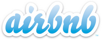

Making it easy to build globally distributed systems
Apache Mesos is a cluster manager that provides efficient resource isolation and sharing across distributed applications, or frameworks. It can run Hadoop, MPI, Hypertable, Spark, and other applications on a dynamically shared pool of nodes.
Download Mesos 0.11.0
or learn how to get started
Active Users
Features
- Fault-tolerant replicated master using ZooKeeper
- Scalability to 10,000s of nodes
- Isolation between tasks with Linux Containers
- Multi-resource scheduling (memory and CPU aware)
- Java, Python and C++ APIs for developing new parallel applications
- Web UI for viewing cluster state
News
June 4, 2013 - New Committer
Brenden Matthews from AirBnB was named a Mesos committer and PPMC member.
June 2, 2013 - Mesos 0.11.0-incubating released
March 6, 2013 - Chronos Released
AirBnB has open sourced Chronos, their Mesos framework replacement for chron.